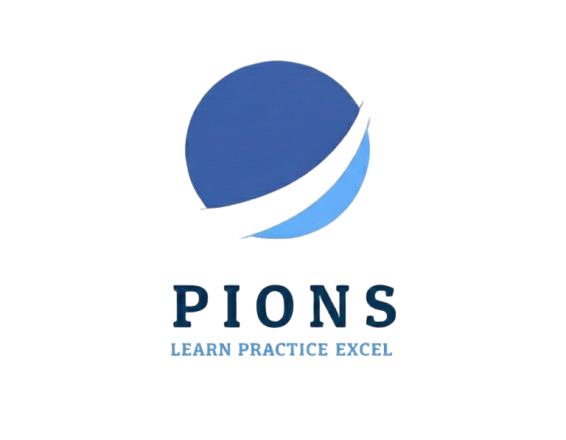

WELCOME TO PIONS
PIONS offers learning opportunities for students interested in developing their career in Physics.The online teaching services as well as classroom programme ensures to consider basics as well as advance topics covering Indian School Board Syllabus and preparing interested students for IIT-JEE, NEET, IIT-JAM, GATE, CSIR-NET and other Physics based competitive exams conducted in India.
